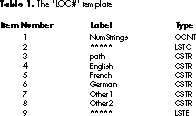

Newton products are currently available localized for English, French, German, and
Swedish. Thus, to take full advantage of the market, Newton applications must be
developed for four languages. As of Newton Toolkit version 1.5, there's a mechanism
for localizing strings at compile time but no built-in support for organizing all the
categories of strings across the different languages (unlike on the Macintosh, where
you can use resources). This article presents a couple of ways to organize localized
strings in your Newton application.
Until Newton Toolkit 1.5, developing an application for English, French, German, and
Swedish required four different application projects or many skanky contortions. This
was tedious, to say the least, but necessary for those who wanted to take full advantage
of the worldwide market for Newton products.
Newton Toolkit 1.5 provides support (with the SetLocalizationFrame and LocObj calls)
for localizing your applications from just one project. But this is useful only at
compile time, and it doesn't provide an infrastructure for organizing and categorizing
the localized objects. In other words, you can have different strings for four locales,
but how you keep track of what strings you have and which ones need localizing is up to
you. Macintosh developers don't have this problem because all strings can reside in
resources; changing the strings in the resources changes them in the application.
This article presents two ways to organize your localized strings. Both methods are
meant to be used at compile time, but there's also information on changing strings at
run time. Before reading this article, you should be familiar with the information in
the Newton Programmer's Guide on localizing Newton applications.
In a Macintosh application you can keep localized strings in the 'STR#' resource of the
resource fork. This isn't an option in a Newton application for two reasons: ResEdit
doesn't directly support Unicode strings, and, more important, a Newton application
doesn't have a resource fork. All your strings have to reside somewhere in your
application package.
A first cut at a solution to the problem of how to organize localized strings in your
Newton application would be to have a viewSetupFormScript or TextSetup method
(where applicable) that sets a particular string based on some application-global
setting. This solution has several disadvantages, such as spreading localized strings
throughout the code (resulting in multiple copies of strings) and requiring all strings
for all countries to be included.
If you've programmed the Newton for a while, you might think of taking advantage of
dead code stripping and using an if statement that switches on a compile-time constant.
This would eliminate unused localized strings but is still awkward.
The best idea is a technique that lets you keep all your strings together. You can do this
by defining a frame in your Project Data with one slot per string that you want to
localize. You can even use nested frames. For example:
constant kUSStrings := '{
AppName: "World Ready!",
ExtrasName: "World!",
HelloWorld: "Hello World",
Dialogs: {
OK: "OK",
Cancel: "Cancel",
Yes: "Yes",
No: "No",
},
};
constant kFrenchStrings := ...
In Newton Toolkit 1.5 and later, you can use this frame with SetLocalizationFrame.
Unfortunately, there's no specification for how to build up the frame, which is
essential to organizing your strings in a sane way. Also, SetLocalizationFrame is meant
only for compile-time localizations. With some extra effort you can organize the
strings in a way that allows them to be localized at run time as well. As the next
section shows, the key is using the Load command in combination with a few constant
functions.
In the previous section, we defined a frame that can be used for each target language.
Each of those target language frames can be nested into an outer frame, called the
languages frame. Each target language subframe contains the localized strings in that
language. These subframes can in turn contain other subframes, enabling you to group
strings into logical categories such as strings used in filing, strings used in searching,
and so on. Each of the frames at the top level of the languages frame must have the same
structure. If you have a path in the USEnglish frame of Entries.Names.Phones.Home,
that path will also need to exist in French, German, and any other languages your
application supports.
The overall structure of the languages frame is as follows:
{USEnglish: {
AppName: "World Ready!",
Dialogs: {
Cancel: "Cancel",
OK: "OK",
// ... and so on
},
French: {
AppName: "Prêt pour le Monde!",
Dialogs: {
OK: "OK",
Cancel: "Annuler",
// ... and so on
},
German: {
AppName: "Welt Ready!",
Dialogs: {
OK: "OK",
Cancel: "Absagen",
// ... and so on
},
// ... and so on
}
This is the format of the frame you would pass to SetLocalizationFrame as well as of a
constant that can be used in runtime localization. Typically, the languages frame would
be kept in a text file or in your Project Data. The problem with this is that the frame
is rather large, and adding or changing an entry in a language subframe can be
difficult. Also, several entries are identical (such as the string for OK).
A better solution is to separate the localized strings by category. This article uses the
target languages as the categories, though you could also employ similar techniques
with other categories. Once the strings are split, you can use the Load command to
assemble the languages frame.
There are two main schemes for organizing the strings. One uses simple text files and
works on both the Mac OS and Windows platforms. The other uses compile-time
functions to read the strings from some other format; on the Macintosh platform, this
method can be used to construct the languages frame from a resource file. We'll look at
each of these methods in turn.
LOADING FROM TEXT FILES
In the first scheme, you separate each language into a different text file. Remember
that Load will return the result of the last statement it executes in the specified file.
This means that each text file will specify one frame. For example, the contents of
your French text file might look like this:
{
AppName: "Prêt pour le Monde!",
Dialogs: {
OK: "OK",
Cancel: "Annuler",
// ... and so on
}
};
You could then modify your Project Data to build the localization frame:
SetLocalizationFrame({French: Load(HOME & "FrenchStrings.f"), ...
It's also helpful to have some string constants that can be used in multiple places. A
good example is the string for OK, which is the same in some languages. To do this, you
should load some general constants before constructing the individual languages that
make up the languages frame. So the overall process for building the languages frame
would be as follows:
You only need predefined constants if you aren't using object
combination. Object combination, a feature that exists as of Newton Toolkit
version 1.6, would solve the problem of multiple instances of a single string
(such as "OK").*
The above description smells of an algorithm. Since you can run NewtonScript at
compile time, you can call a function to load a languages frame from text files (see
Listing 1). The main trick of this function is that it uses the language symbol to create
a pathname for Load.
Listing 1. CreateLanguagesFrameFromText
global CreateLanguagesFrameFromText(GlobalsFilePath,
LanguagesSymArray)
begin
if GlobalsFilePath then
Load(GlobalsFilePath);
local langFrame := {};
foreach sym in LanguagesSymArray do
langFrame.(sym) := Load(HOME & sym & "Strings.f");
langFrame;
end;
You can define this function in a text file (say, WorldStrings.f) that you add to your
project. Note that you must compile this file before you load your international
strings.
You could use the languages frame directly as the argument to SetLocalizationFrame;
however, as we'll see later in this article, there are better ways to use the frame.
LOADING FROM RESOURCES
The second scheme creates the languages frame from a resource file. You can apply the
methodology to other non-text file sources as well. To take advantage of the code below,
you'll need Newton Toolkit 1.6 or later. One important point: all of this code works
only for Roman-based languages.
To make life easier, we'll define a template in ResEdit that shows all the localized
versions of a particular string. The template defines a resource of type 'LOC#', which
is loosely based on the 'STR#' resource (see Table 1). Because we're using a template,
the number of languages must be defined in advance; we'll choose 5 as a nice arbitrary
number. You can find the 'LOC#' template in the sample code on this issue's CD.
You can now use the 'LOC#' resource to enter all of your strings, grouped into
categories that make sense to you. The advantage of this resource is that the path
expression in the languages frame and all localized strings for that path expression are
grouped together.

You may be wondering why the 'LOC#' template contains an English string. If you use
LocObj, the first argument is a string that's taken as the English localization. For the
case where you're only localizing at compile time, the English string is redundant. But
if you want to localize at run time, you'll need the English string around.
If you're familiar with the resource calls in the Newton Toolkit, you will have spotted
a potential problem: there's no way to query for the available resource IDs of a
particular resource. The basic solution to this problem is to try reading a resource
and to catch the exception that the Newton Toolkit throws if the resource isn't present.
Unfortunately, iterating through all possible resource IDs while catching exceptions
takes several minutes.
So we impose these restrictions: there can be any number of 'LOC#' resources but they
must be numbered consecutively, and the first resource ID must be either 0 (because
programmatically generated resources are likely to start with 0) or 128 (because
those created in ResEdit will start with 128). The code in Listing 2 generates an array
of resources of a given type based on these criteria.
Listing 2. GetAllResources
global GetAllResources(ResType, NewtType)
begin
local result := [];
local atID := 0;
// See if we can read in resource ID 0. If so, increment the
// next resource ID; if not, set the ID to 128.
try
AddArraySlot(result, GetResource(ResType, atID, NewtType));
atID := 1;
onexception |evt.ex.msg| do
atID := 128;
// Start at the current resource ID (either 1 or 128) and
// continue reading in resources until an exception occurs.
loop
begin
try
AddArraySlot(result, GetResource(ResType, atID, NewtType));
atID := atID + 1;
onexception |evt.ex.msg| do
break;
end;
result;
end;
Once you have an array of 'LOC#' resources, you need to parse these resources into
NewtonScript path expressions and strings. The code in Listing 3 gets all the 'LOC#'
resources and generates a languages frame.
Listing 3. CreateLanguagesFrameFromRsrc
global CreateLanguagesFrameFromRsrc(ResFilePath, LanguagesSymArray)
begin
// Throw if there aren't exactly 5 languages.
if Length(LanguagesSymArray) <> 5 then
Throw('|evt.ex.msg|,
"The LanguagesSymArray must be exactly 5 elements long.");
// The languages frame array that will be returned
local langFrame := {};
foreach sym in LanguagesSymArray do
langFrame.(sym) := {};
// Could use a constant since currently must be exactly 5
// languages.
local numLanguages := Length(LanguagesSymArray);
local r := OpenResFileX(ResFilePath);
local locResourceArray := GetAllResources("LOC#", 'binaryObject);
/* Process the LOC# resources. The format of the resource is:
16-bit count of number of string sets
string set 1
string set 2...
string set n
string set:
pathexpression as C string
English as C string
French as C string
German as C string
other1 as C string
other2 as C string
*/
local numStringSets;
local pathExpr;
local tempString;
local atIndex;
foreach locResource in locResourceArray do
begin
// Get the number of string sets.
numStringSets := ExtractWord(locResource, 0);
atIndex := 2;
// Grab each string set.
for stringSet := 1 to numStringSets do
begin
// Grab the C string that is the path.
pathExpr := ExtractCString(locResource, atIndex);
// Update index counter.
atIndex := atIndex + StrLen(pathExpr) + 1;
// Create path expression for following strings.
pathExpr := call Compile("'" & pathExpr) with ();
// Get the language strings and jam them.
// WARNING: This code will ignore zero-length strings.
// There are rare cases where you actually want an empty
// string for a particular translation; in this case, you
// could modify the code to throw an evt.ex.msg with the
// appropriate error.
foreach langSym in LanguagesSymArray do
begin
tempString := ExtractCString(locResource, atIndex);
if StrLen(tempString) > 0 then
langFrame.(langSym).(pathExpr) := tempString;
atIndex := atIndex + Length(tempString) + 1;
end;
end;
end;
CloseResFileX(r);
langFrame;
end;
Unlike the text method, the resource method has to assume a certain number of base
languages. The first thing the code does is to check that there are exactly five language
symbols. If not, the code throws an exception. The result is a typical Newton Toolkit
error dialog with the string specified in the code.
In reality, we could be a bit more forgiving. The code won't create entries in the
languages array for items that are empty strings. So if a developer were careful not to
fill out entries for particular languages, the restriction could be relaxed to no more
than five languages. You could also make the code a bit more complex and just not add
strings for undefined languages. This is left as an exercise for the masochistic reader.
An even better approach would be to create some other resource (say 'LOCi') that
contains information on how many languages are defined by the 'LOC#' template and the
language symbols. It would require slightly more complex code for
CreateLanguagesFrameFromRsrc, but it would provide more flexibility later on. The
CD contains modified code that uses an 'LOCi' resource.
As you can see, this is considerably more complex than the function used for text files.
Also note that this methodology can't use constants for common strings. There are ways
to massage the data to use constants, but that's left as another exercise for the reader.
Once you've created the languages frame, you can use SetLocalizationFrame and LocObj
in your project to localize your strings. The sample on this issue's CD (Compile Time
Strings) uses the code shown in Listing 4. This code is more general than you may
need, in that it creates the frame from either text files or resources. The last line sets
up a constant for the English (that is, the default) language frame. You can use the
constant English strings as part of the first argument to LocObj.
The LocObj mechanism can be used with any object, not just strings.
This article looks only at strings, though the text-based method will work for
most types of objects.*
Listing 4. Calling SetLocalizationFrame
// Create the languages frame, either by text or by resource.
constant kFromText := nil;
// Create the kLanguagesArray constant for the languages.
// The text method requires only as many languages as there are
// text files; the resource method requires a 5-element array.
DefConst('kLanguagesArray,
call func(isText)
if isText then
'[English, French, German];
else
'[English, French, German, Other1, Other2]
with (kFromText));
if kFromText then
DefConst('kLangFrame,
CreateLanguagesFrameFromText(
HOME & "StringsCommon.f", kLanguagesArray));
else
DefConst('kLangFrame,
CreateLanguagesFrameFromRsrc(
HOME & "strings.rsrc", kLanguagesArray));
SetLocalizationFrame(kLangFrame);
// Define a constant for the English language frame.
constant kStrings := kLangFrame.English;
You're probably wondering why we don't create a wrapper function to generate the
correct LocObj call. Unfortunately, LocObj is a special type of call in the Newton
Toolkit; it's evaluated as soon as the compiler hits it and it must return a constant
value.
The LocObj mechanism is designed for compile-time customization of your application.
In other words, the LocObj function exists only in the compile-time environment of
the Newton Toolkit; you can use it only in places that will be evaluated at compile time.
In some circumstances you may want to change localized strings at run time. One
example would be a language translator application where you want the interface
strings to be displayed in the current source language.
The raw data for the runtime strings exists in the languages frame. The frame can be
included in your package so that you have access to all the localized strings. This will
add a significant amount of space to your package; at worst, it will take up two bytes
per character in the unique strings, plus the storage occupied by the symbols and
frame structure.
You'll need to add some runtime support for switching language elements of the
interface. The main task is to decide what views need to be updated when a language is
switched. The simplest way to do this is to recursively propagate a conditional message
send through the application's view children:
// In application base view ...
myApp.PropagateLanguageChange := func()
begin
// ... conditionally recur through all the kids.
foreach child in :ChildViewFrames() do
// "x.y exists" only checks for y using proto inheritance.
if child.PropagateLanguageChange exists then
child:PropagateLanguageChange();
end;
This code won't send to all children. To do that you would remove the exists test and
just send the message, which will always be found since the top-level parent defines
it. If you make this change, you should add some sort of conditional check for a message
that does the real work of updating (like "if child.DoLanguageChange exists then ...").
An alternative is to keep track of which views need updates. How you do it depends on
your application's structure. Typically, you would maintain an array of the declared
views that need updating. If the views that need updating are well known, you're better
off using the latter method.
Each view that requires an update will need to perform three tasks: change the text
based on the source language; usually change the viewBounds based on the new text; and
redraw or refresh based on the new viewBounds and text. Since it's very likely that the
viewBounds will change, most of the work can be done in the viewSetupFormScript
method of the view. Remember that redisplaying with a new viewBounds requires
sending a SyncView, which has the side effect of sending all viewSetup messages.
This means that you can use the SyncView call as your message to indicate that the
source language has changed. When a view opens by normal means it will also use the
correct source language. Note that in some cases you may want to use RedoChildren,
which has the same basic effect as SyncView sent to all children.
One caveat is that both SyncView and RedoChildren are expensive calls. You should
limit the places where the language can change. An example of runtime customization
(Run Time Strings) is provided on the CD.
With the code from this article, you can now make all your applications world ready. If
you're just starting an application, take the time and use LocObj where you should. If
you already have a project, retrofit it. Then take the code samples, customize them to
your heart's content, and code away. Today English, tomorrow the world.
Maurice Sharp is a truly multinational person. He was born in England, naturalized
to Canada, and now lives in California. He hopes to visit the United States someday as
well. His multinational background makes him a bit psychotic when it comes to beer.
He's never sure if he should order it warm or cold, or just have water. This is why he
prefers sake. Maurice is one of the original members of Newton Developer Technical
Support and is still there (remember, we said he was a bit psychotic).*
Thanks to our technical reviewers Bob Ebert, Mike Engber, David Fedor, and Martin
Gannholm.*